البرمجة بلغة C لا تحتاج غير محرر نصوص Text editor لنقوم بالكتابة عليه ومترجم للغة الألة Compiler يحول الأكواد التي قومنا بكتابتها الي تعليمات يمكن تنفيذها من قبل وحدة المعالجة المركزية ومُربط Linker ليقوم بتجميع الملفات التي تم إنشائها من قبل الـ Compiler في ملف تنفيذي يمكن تشغيله علي نظام التشغيل.
ولكن هناك طريقة افضل من استخدام تلك المكونات مفصولة وهي استخدام بيئة تطوير متكاملة Integrated Development Environment IDE والتي ستسهل عملية الكتابة والتحويل الي ملف تنفيذي. ليس علي القاريء ان يلتزم ببيئة تطوير محددة فهناك العديد من البيئات المتوافرة بشكل مجاني مغلق او مفتوح المصدر ولكن في شرح الأمثلة سيتم استخدام CodeBlocks. يمكنك تحميله من هنا: http://www.codeblocks.org/downloads/26
ان كنت علي نظام ويندوز ولا تمتلك MinGW بشكل مسبق قم بختيار codeblocks-17.12mingw-setup.exe
بعد تنصيب CodeBlocks قم بفتحه وانشيء مشروع جديد من File -> New -> Project -> Console Application -> Go
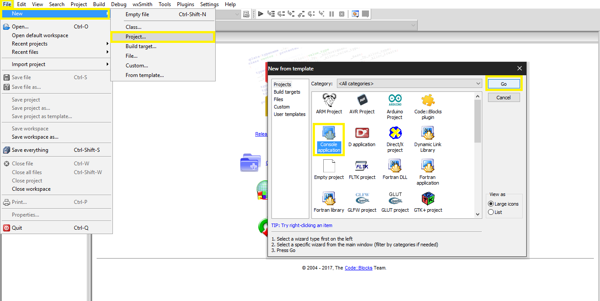
بعد ذلك اختر C بدلا من C++ وقم بتسمية المشروع الأول لك اي اسم كمثال Hello world Project واترك الإعدادات التالية كما هي بدون تعديل ثم اضغط Finish وسيتم انشاء المشروع.
لتشغيل المشروع قم بالضغط علي Build and Run
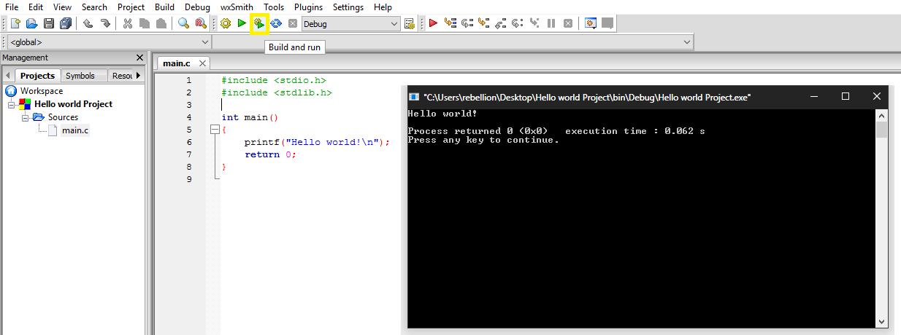
برنامج الـ C ايا كان حجمه يتكون من متغيرات Variables ودوال Functions. والدالة تحتوي الشروط و الأوامر التي سيتم تنفيذها والتي تحدد طريقة عمل البرنامج بينما المتغيرات تقوم بتخزين المعلومات اثناء عملية تنفيذ البرنامح. البرنامج التالي هو احد ابسط البرامج التي يمكن كتابتها بلغة C:
xint main(void){ printf("Hello world!\n"); return 0;}السطر الأول والثاني من البرنامج يحتوي علي التوجيه <..>include# مع اختلاف المحتوي بين <> والذي يمثل الملف الرأسي Header File المراد استخدامه داخل برنامجنا. والملفات الرأسية تحتوي علي ثوابت ودوال تسهل علينا البرمجة وتنتهي دائمنا بـ h.
في السطر الرابع يوجد اسم الدالة ()main وهي الدالة الرئيسية لأي مشروع ومنها يبدأ تنفيذ البرنامج. اما القوسين في اسم الدالة فيدلان علي أنها دالة (دالة بدون وسائط في هذه الحالة) وليست متغير او ثابت. وقد تأتي الدالة main في عدة اشكال اشهرهم:
xxxxxxxxxxint main(void){...}و تعني ان الدالة لا تقبل وسائط. او في الشكل التالي:
xxxxxxxxxxint main(int argc, char *argv[]){...}و يعني ان الدالة ستقبل وسائط الدالة الرئيسية Command line arguments. مما يمكننا من تمرير الوسائط للبرنامج عن طريق الـ Console كمثال:
xxxxxxxxxxprogram.exe argument1 argument2 argument3 ...
وقبل اسم الدالة يتم تحديد نوع البيانات التي سترجعها الدالة في هذه الحالة تم استخدام int وهو ما يحدد القيمة المرجعة كرقم صحيح يساوي 0.
في السطر الخامس والثامن يوجد الحاضنات Braces ويتمثلان في {…} ويطلق علي ما بينهم Block وهو ما سيتم تنفيذه عند استدعاء الدالة داخل البرنامج.
في السطر السادس يوجد الدالة printf وهي دالة تابعة للملف الرأسي stdio.h, وتقوم تلك الدالة بطبع الوسائط التي يتم تمريرها لها الي الشاشة، في مثالنا السابق سيتم طبع كلمة !Hello world متبوعة بسطر جديد n\. وفي نهاية اي سطر داخل الـ Block الخاص بالدالة يتم وضع الفاصلة المنقوطة ; و تعني نهاية السطر او التعليمة.
في السطر السابع يوجد كلمة return وهي ما تحدد القيمة المرجعة بعد انتهاء تنفيذ الدالة وتتوافق مع نوع البيانات الذي تم تحديده بشكل مسبق عن طريق استخدام int. ففي تلك الحالة سيتم إرجاع القيمة 0، وبسبب اننا داخل الدالة main وإنتهاء تنفيذها يعني انتهاء تنفيذ البرنامج نفسه سيتم إرجاع تلك القيمة الي الحاسوب والقيمة 0 في هذه الحالة تعني انه تم الأنتهاء من تنفيذ البرنامج بدون اي اخطاء او مشاكل.
المتغيرات Variables والثوابت Constants هي كائنات البيانات الأساسية Basic Data Objects التي يتم معالجتها في البرنامج. عملية التعريف Declaration يتم تنفيذها للتعريف عن المتغيرات والثوابت التي سيتم استخدامها اثناء عملية التشغيل ومن اي نوع ستكون تلك المتغيرات والثوابت بالأضافة الي إمكانية تعيين قيمة مبدئية لها Initial Value. اما المؤثرات Operators فتحدد ما سيتم فعله بتلك المتغيرات والثوابت، ويحدد نوع المتغيرات والثوابت انواع البيانات التي يمكن ان تحتويها وما العمليات التي يمكن ان تتم عليها.
المعرفات مثال اسماء المتغيرات والدوال تتكون من احرف وارقام مع مراعاة ان اول خانة في اسم المُعرف يجب ان تكون حرفا او _ وان المتغيرات في لغة C تعتبر حساسة لحالة الأحرف case-sensitive فكمثال المتغير Var يختلف عن المتغير var عن المتغير vaR وهكذا ..
ويحمل كل مُعرف من المعرفات نوع، يحدد ذلك النوع البيانات التي يمكن للمُعرف ان يحتويها وكيف سيتم تخزين تلك البيانات داخل الذاكرة وما هي العمليات التي يمكن تنفيذها عليه، وتحتوي لغة C علي ثلاث انواع اساسية تتمثل في الأحرف characters والأرقام الصحيحة integers والأرقام الغير صحيحة floating-point. الجدول التالي يوضح نوع المعرف والحجم الذي يحتاجه لتخزين البيانات
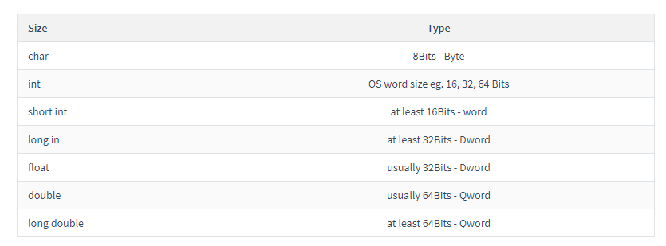
من الجدول السابق يمكننا تقسيم الأنواع حسب الحجم علي الترتيب التالي:
xxxxxxxxxxchar ≤ short int ≤ int ≤ long int ≤ float ≤ double ≤ long doubleالبرنامج التالي يوضح عدد الـ Bytes بستخدام الـ sizeof operator. ومع انه يشبه الي حد ما الدوال الي انه ليس دالة لكنه كلمة محجوزة Keyword.
xxxxxxxxxxint main (void){ printf("void\tchar\tshort\tint\tlong\tfloat\tdouble\n"); printf("%3d\t%3d\t%3d\t%3d\t%3d\t%3d\t%3d\n",sizeof(void), sizeof(char), sizeof(short), sizeof(int),sizeof(long), sizeof(float), sizeof(double)); return 0;}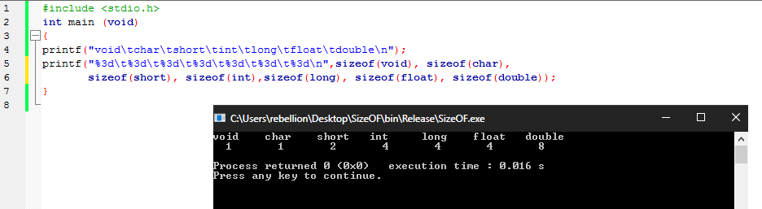
اثناء كتابة البرنامج يحتاج المبرمج احيانا الي التغيير في طريقة استخدام مساحة المتغيرات فيمكنه استغلال الـ most-significant-bit والتي يتم استخدامها كـ Sign-bit للتمييز بين البيانات السالبة والموجبة. هذا يجعل المتغير موجب دائما ويضاعف مساحته عن طريق استخدام الـ type specifiers
xxxxxxxxxxunsignedعلي النحو التالي
xxxxxxxxxxunsigned int var = 12345;المثال التالي يوضح الفرق بين ان يكون المتغير signed وunsigned
xxxxxxxxxx/*a 16-bit signed shortcan represent the numbers −32768 to 32767*/signed short int var = 12345;short int var = 12345;/*while a 16-bit unsigned shortcan represent the numbers 0 to 65535*/unsigned short int var = 12345;xxxxxxxxxxint main(void){ signed short int signedVar = 0b1111111111111111; unsigned short int unsignedVar = 0b1111111111111111; printf("signed Value %d\n", signedVar); printf("unsigned Value %d\n",unsignedVar); return 0;}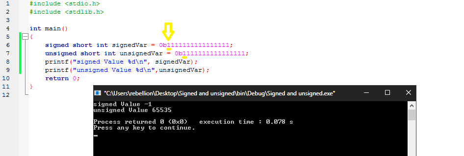
لاحظ انه لا فرق بين كتابة signed من عدم كتابتها بسبب ان الأرقام تكون signed من الأصل وكيف تم التعامل مع الـ most-significant-bit في الحالتين.
المتغيرات يمكن أن تغيير قيمتها بعد تعينها فكمثال:
xxxxxxxxxxint main(void){ int var = 5; var = 10; printf("%d\n",var); /* Output 10 */ return 0;}بينما الثوابت التي يتم تعينها عن طريق الـ Qualifier المسمي const لا يمكن تغيير قيمتها بعد تعينها
xxxxxxxxxxconst int DoesNotChange = 5;DoesNotChange = 6; /* Error: will not compile */كذلك يمكن تعيين الثوابت عن طريق الموجه directive المسمي define# بالشكل التالي
xxxxxxxxxxint main(void){ printf("%d\n",BLOCK_SIZE); printf("%d\n",TRACK_SIZE); printf(HELLO); printf("%f\n",EXP); return 0;}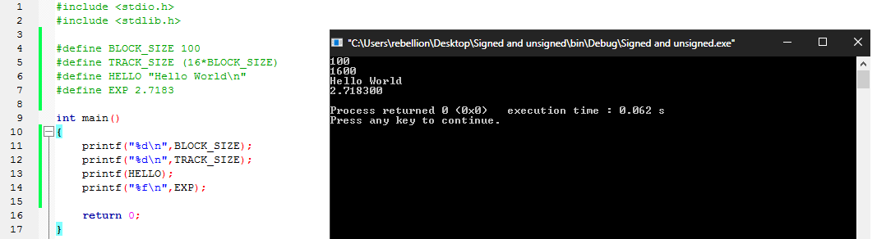
و تسمي الثوابت في تلك الحالة ثوابت رمزية symbolic constants لأنه يتم تبديل اسمها بقيمتها اثناء عملية التجميع، سيتم التحدث تفصيلا عن عملية التجميع في الأجزاء القادمة.
تنقسم العمليات الحسابية الي نوعين احادي unary وثنائي binary. في الـ binary يمكننا استخدام المؤثرات operators التالية:
+ للجمع plus - للطرح minus* للضرب multiply / للقسمة divide % لباقي القسمة modulus مثال:
xxxxxxxxxxint main(void){ int num1 = 10; int num2 = 25; int num3 = -54; int num4 = 99; printf(">> %d",num1 + num2 - num3 * num4 / num1); return 0;}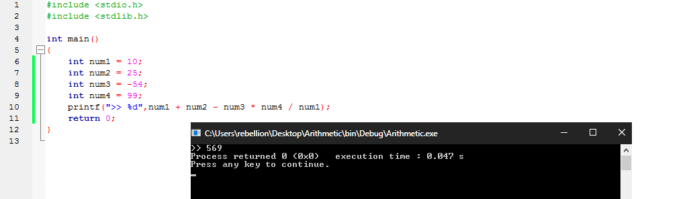
اما في الـ unary فيتم أستخدام المؤثرات operators التالية:
-- للإنقاص بواحد decrement++ للزيادة بواحد incrementمثال:
xxxxxxxxxxint main(void){ int inc = 0; printf("%d\n",inc++); printf("%d\n",inc++); printf("%d\n",inc++); printf("%d\n",inc++); printf("%d\n",inc++); printf("%d\n",inc--); printf("%d\n",inc--); printf("%d\n",inc--); printf("%d\n",inc--); printf("%d\n",inc--); printf("%d\n",inc--);}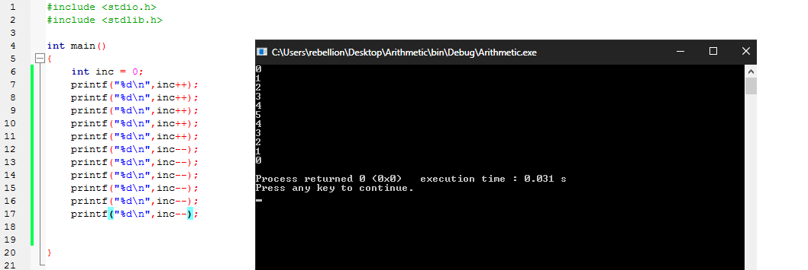
و يمكن استبدال الـ unary operators علي النحو التالي:
xxxxxxxxxxint inc = 0;inc += 1;inc -=1;/* or */inc = inc + 1;inc = inc - 1;لاحظ اننا في تلك الحالة من يحدد القيمة التي سيتم اضافتها فيمكن وضع اي قيمة اخري مثال:
xxxxxxxxxxint inc = 0;inc += 10;inc -= 5;/* or */inc = inc +10;inc = inc -5;
المؤثرات العلاقية هي مؤثرات تستخدم في المقارنة بين قيمة وقيمة أخري, حيث تكون النتيجة إما صحيحة
Trueويتم تمثيلها بالرقم1او خاطئةFalseويتم تمثيلها بالرقم0.
و تتمثل المؤثرات العلاقية في:
< اكبر من greater than> اصغر من less than=< اكبر من او يساوي greater than or equal to=> اصغر من او يساوي less than or equal to== يساوي equal to=! لا يساوي not equal toالمثال التالي يوضح استخدام المؤثرات العلاقية:
xxxxxxxxxxint main(void){ printf("%d\n", 5==5); printf("%d\n", 10<7); printf("%d\n", 22 != 55); printf("%d\n", 44 <= 20); return 0;}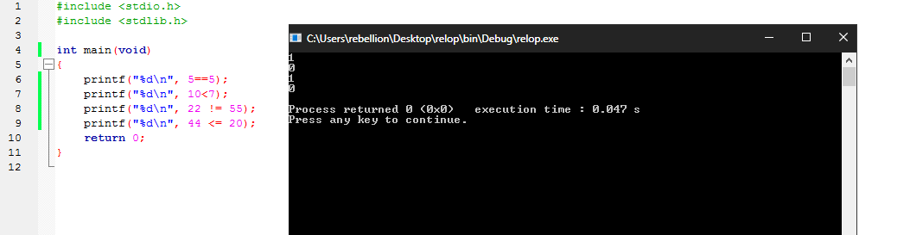
اما المؤثرات المنطقية فتستخدم في الجمع بين المؤثرات العلاقية في نتيجة واحدة نهائية وتنقسم الي:
&& Logical AND|| Logical OR! Logical NOT المثال التالي يوضح استخدام المؤثرات المنطقية:
xxxxxxxxxxint main(void){ printf("%d\n", 5==5 && 10==10); printf("%d\n", 5==5 && 55==10); printf("%d\n", 5==5 || 10==25); printf("%d\n", !5==5 ); return 0;}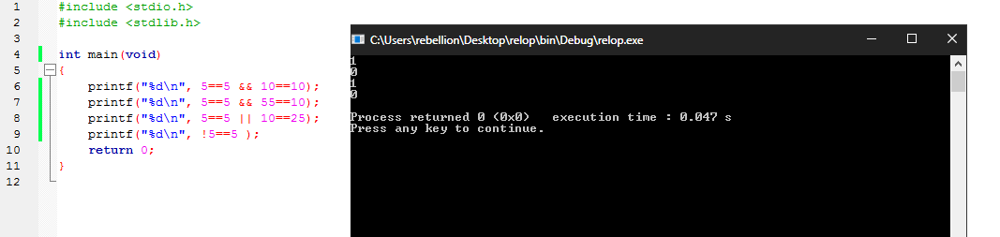
من المثال السابق يتضح ان:
مؤثرات الـ Bitwise هي مجموعة من المؤثرات التي تعمل علي مستوي البيتات Bits. وتنقسم الي:
& Bitwise AND| Bitwise OR^ Bitwise XOR>> Bitwise left shift<< Bitwise right shiftالمثال التالي يوضح استخدام مؤثرات الـ Bitwise علي بيانات تمت كتابتها بالنظام الثنائي binary للتوضيح:
xxxxxxxxxxvoid bin(int n){ /* Step 1 */ if (n > 1) bin(n/2); /* Step 2 */ printf("%d", n % 2);}int main(void){ /* Bitwsie AND */ bin(0b10101010 & 0b11010101); printf("\n"); bin(0b11111111 & 0b10000011); printf("\n\n"); /* Bitwise OR */ bin(0b10101010 | 0b00000000); printf("\n"); bin(0b10101010 | 0b11111111); printf("\n\n"); /* Bitwise XOR */ bin(0b10101010 ^ 0b01111111); printf("\n"); bin(0b00101010 ^ 0b10101010); printf("\n\n"); /* Bitwise left shift */ bin(0b01000001 << 0b00000001); printf("\n"); /* Bitwise rigth shift */ bin(0b10000010 >> 0b00000001); printf("\n\n"); return 0;}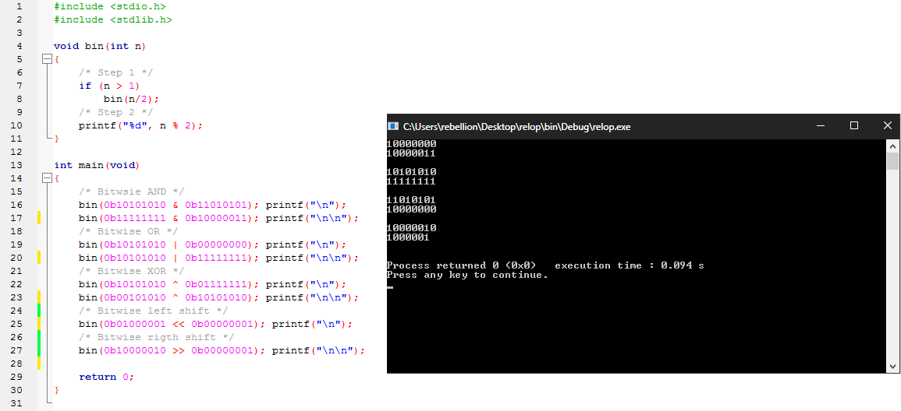
من المثال السابق نلاحظ ان:
AND تحتاج الي ان تتماثل الـ Bits حتي يساوي الناتج 1 وفي حالة الأختلاف ستترك بقيمة 0OR تحتاج الي ان تساوي احدي الـ Bits الرقم 1 حتي يتم تمثيلها في الناتج النهائي كـ 1 XOR تقوم بعكس الـ Bits المتشابهة اذا كانت تساوي 1 فتحولها الي 0 left / rigth shift تقوم بنقل الـ Bits بعدد نقلات لليسار او لليمين
اثناء كتابة البرنامج قد يحتاج المبرمج الي تحويل نوع بيانات الي نوع بيانات اخر من ثم تخزينه وإعادة استخدامه. ولكي نقوم بذلك نستخدم الـ Casts عن طريق كتابة نوع البيانات المراد التحويل له بين قوسين متبوع بالبيانات المراد تحويلها بين قوسين آخرين. المثال التالي يوضح كيفية استخدام الـ Casts:
xxxxxxxxxxint main(void){ float num1 = 120.1; float num2 = 54.5; printf("%f\n", num1 - num2); int myint = (int)(num1 - num2); printf("%d\n", myint); char mychar = (char)(num1 - num2); printf("%c\n", mychar); return 0;}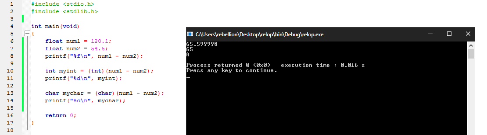